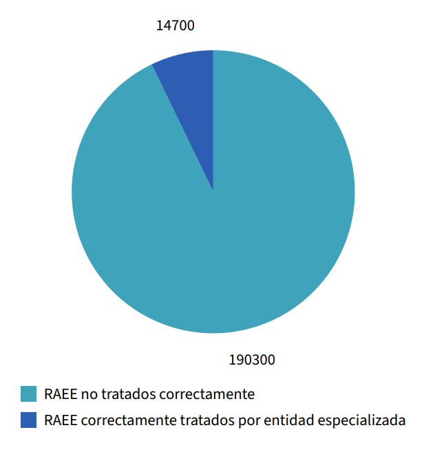

Que son los RAEE?
Los aparatos eléctricos y electrónicos
(AEE) son productos que están presentes en
prácticamente
toda nuestra vida cotidiana que van desde una amplia variedad de dispositivos, como computadoras, celulares,
electrodomésticos, televisores, juguetes electrónicos, entre otros y están conformados por una combinación
de piezas o elementos que para funcionar necesitan corriente eléctrica o campos electromagnéticos y realizan
un sinnúmero de trabajos y funciones determinadas. En el momento en que sus dueños consideran que no les son
útiles y los descartan, se convierten en residuos de aparatos eléctricos y electrónicos (RAEE).
La fabricación y el consumo de aparatos y dispositivos eléctricos tienen un aumento como consecuencia del
actual modelo socioeconómico de crecimiento ilimitado y del consumismo.
Esta situación desencadena en el ciclo de vida de estos productos unas afectaciones en términos de
explotación incontrolada de materias primas, consumo energético proveniente mayormente de fuentes fósiles y
generación de residuos, que ponen en riesgo la sostenibilidad ambiental del planeta y pueden afectar la
salud y la vida de todos sus habitantes.
Así, la rápida innovación tecnológica y la reducción del tiempo de vida de los aparatos, entre otros
factores, contribuyen a que estos residuos sean una de las corrientes de mayor crecimiento en el mundo,
tanto en los países industrializados como no industrializados, con una tasa de crecimiento anual y global
del 5 %.
Impacto sobre la salud y el ambiente
Hay tres fuentes principales de
sustancias que se pueden liberar durante la
recuperación de materiales y el reciclaje de los RAEE que son motivo de preocupación mundial: los metales
pesados constituyentes originales de los equipos, como el plomo, el cadmio y el mercurio; las sustancias que
pueden añadirse durante algunos procesos de recuperación, como el cianuro; y las sustancias no intencionales
que pueden formarse durante estos procesos como las dioxinas y furanos.
Por otra parte, la contaminación ambiental que resulta de la extracción inapropiada de los materiales
aprovechables de los RAEE, puede conducir a exposiciones indirectas de las personas que habitan o permanecen
en los alrededores de los sitios de manipulación de los residuos de aparatos eléctricos y electrónicos por
medio de la contaminación del suelo, el aire y el agua.
Datos en Peru (2023)
De un total de 205000 toneladas de RAEE:

Categorias de RAEE